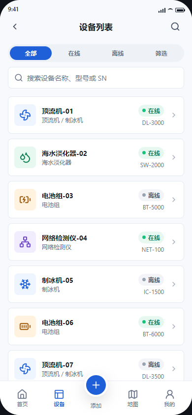
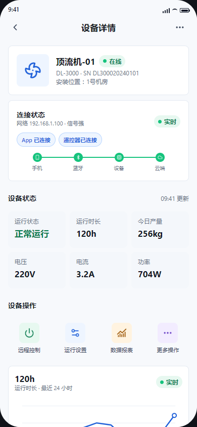
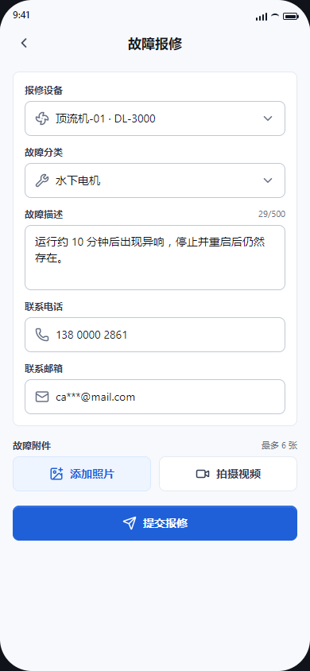
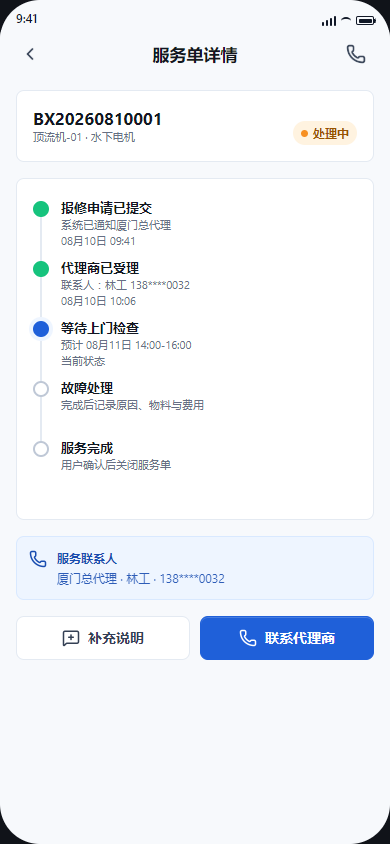

01 项目概览
App、设备、后台与售后共同承接一条服务链
产品同时涉及用户端、设备端、运营后台与售后团队。我围绕设备身份、用户关系、运行状态和服务进度梳理跨端规则，让用户、经销商、运营与售后能够基于同一台设备和同一条服务记录继续处理。
02 项目背景
设备进入真实使用后，问题会跨越多个系统
原来的设备信息、用户关系、运行状态和售后处理容易分散在不同入口。用户只知道“设备不能用”，经销商需要判断是否属于服务范围，运营和售后还要继续确认设备身份、当前状态与历史记录。项目目标不是增加一个移动入口，而是让问题从发现到处理都有明确承接。
03 核心问题
我真正解决的是跨角色的责任衔接
项目初期，各端很容易分别讨论功能。我先梳理设备属于谁、状态由哪一端产生、异常交给谁处理，再决定 App、设备、后台和售后各自承担什么责任。
- 设备与用户关系不清时，后台难以定位服务对象
- 连接、绑定、授权和业务可用状态需要分别判断
- 故障信息必须关联设备、用户与历史状态
- 经销商、运营与售后拥有不同的查看和处理范围
- App 需要把受理、处理与完成状态持续反馈给用户
04 用户与场景
同一台设备，在不同角色眼中意味着不同任务
确认设备是否可用，查看设备详情，发起报修并跟踪处理进度。
确认设备归属与服务关系，为用户提供第一层支持。
从设备、用户和历史状态中定位问题，推进并记录服务结果。
05 我的职责
重点处理多端关系、设备状态与售后承接
- 梳理用户、设备、经销商、运营与售后关系
- 定义绑定、在线、授权、异常与服务状态
- 设计 App 侧设备查看、操作与报修路径
- 规划后台设备、OTA、工单与权限模块
- 输出核心原型、PRD 与评审材料
- 协同设备侧、研发和测试验证跨端流程
06 产品方案
设备身份把用户端和服务端连接起来
我的设备、设备详情、故障报修和服务进度，围绕用户当前绑定的设备展开。
提供唯一身份、在线状态、运行数据与指令结果，作为两端判断的共同依据。
管理后台承接经销商、运营和售后动作，并将处理节点回写到用户侧。
07 核心流程
一次异常从发现到反馈的完整路径
- 用户登录 App 并绑定设备
- 系统读取设备身份与当前状态
- 用户进入设备页完成查看或操作
- 状态异常时确认故障现象
- 从当前设备发起报修
- 后台生成带设备上下文的服务工单
- 经销商或售后人员接收并处理
- 处理节点与结果回写 App
- 用户查看进度并补充必要信息
- 服务完成后保留可追溯记录
08 产品证据
四个页面承接一次设备服务
以下为项目真实原型页面，截图中的设备名称、号码和状态均为演示数据，不代表真实运营规模。

让用户在进入操作前先确认设备身份、在线与离线状态。
我的设计重点状态和异常优先于低频信息，入口直接落到对应设备。

在同一页完成状态判断、连接确认和常用设备操作。
我的设计重点将实时状态、关键数据与可执行动作分层，异常时仍保留处理入口。

让当前设备的问题直接进入售后流程。
我的设计重点自动带入设备与账号联系方式，用户只补充故障分类、描述和附件。

回答当前由谁处理、处理到哪里以及接下来发生什么。
我的设计重点用时间线呈现受理、上门、故障处理和完成节点，并保留补充说明与联系入口。

09 产品决策
三个决定，处理状态、入口与上下文
我的判断：“已连接”只能证明通信建立，不能代表绑定、授权和业务条件全部满足。
最终方案：分层展示状态，并为每类阻塞给出对应处理动作。
我的判断：用户最容易在查看设备状态时发现问题，入口远离设备会丢失当前上下文。
最终方案：将异常提示和报修入口放在设备相关页面的高优先级位置。
我的判断：设备编号、归属关系和已知状态不应要求用户重复输入。
最终方案：系统自动带入设备上下文，用户只补充现场现象和必要凭证。
10 项目难点
难点不在单个页面，而在多端对同一状态的理解
设备信号、App 展示和后台记录来自不同环节，需要明确每个状态由谁产生、何时更新、失败后怎样恢复。
用户、经销商、运营与售后都参与服务。产品需要把查看范围、处理动作和交接条件写清，避免工单进入无人承接的状态。
11 最终落地
用户端和设备运营后台均已形成可访问产品
用户端覆盖设备、地图与 OTA、售后服务以及经销商相关入口；后台覆盖用户、经销商、项目、设备、库存、OTA、报修、投诉、物料和权限等管理模块。两端通过设备身份与服务记录建立关联，使问题能够从用户侧进入后台处理，再把进度和结果返回用户侧。
12 项目复盘
设备产品的服务能力要在状态设计阶段进入方案
这次项目让我更明确：用户看到设备异常时，需要的不是一个错误名称，而是异常是否影响使用、下一步由谁处理以及处理结果如何返回。若重新推进，我会更早把设备信号、App 展示、后台状态与售后动作整理成同一份状态表，并让报修表单优先复用系统已知信息，减少用户重复判断。